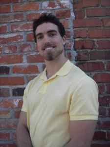
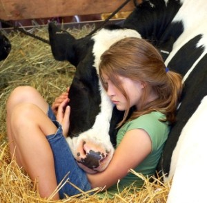
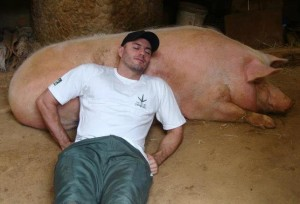
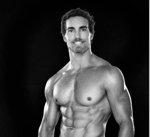

- 
- Escrito por Derek Tresize
Há muitas razões pelas quais alguém possa decidir ‘virar vegano’, ou radicalmente mudar a maneira que come baseado em algo que aprendeu ou algo no qual acredita, e isso costuma variar de pessoa pra pessoa. Por que ser bodybuilder (fisioculturista) sendo vegano? Isso levanta todo um novo conjunto de perguntas. Além do infame ‘De onde você tira a sua proteína?’ ser um bodybuilder vegano pode fazer com que as pessoas te perguntem por que você faz o que faz. Por que você se esforça para construir um corpo grande, musculoso e forte em uma dieta baseada em plantas enquanto o principal dogma do esporte envolve comer quilos de carne, peixe e aves todos os dias? Embora dois atletas não dêem a mesma resposta, algumas razões importantes do porquê eu faço isso e também porque você está lendo isso são para provar que pode ser feito, seguir o esporte que você ama enquanto segue a dieta mais saudável possível, e servir de modelo no apoio aos direitos dos animais.
Além do infame ‘De onde você tira a sua proteína?’ ser um bodybuilder vegano pode fazer com que as pessoas te perguntem por que você faz o que faz.
Todo atleta ama um desafio, Eu nunca conheci um atleta de sucesso em nenhum esporte no qual competi que não prospere sob pressão e ame ser responsável por provar do que ele é capaz. É claro que há medo envolvido ao testar suas habilidade, mas isso faz parte da emoção! Bodybuilding em uma dieta à base de plantas oferece esse mesmo desafio que pode ser tão viciante. Qualquer um falando que não pode ser feito apenas alimenta o seu desejo de se sobressair no esporte. Ao levar sua dieta em uma direção completamente nova e não-ortodoxa você se distingue da manada, mostrando que você é um pensador independente capaz de alcançar sucesso sem seguir o mesmo caminho batido de todos os atletas que te antecederam.
O bodybuilding vegano pode te ajudar a se tornar um modelo melhor se você está lutando pelos direitos dos animais.
Além de provar que você pode ter sucesso no esporte que ama enquanto come a dieta que quer, bodybuilding numa dieta à base de plantas também te permite competir no esporte sem comprometer a sua saúde. Embora a mídia esteja apenas começando a fazer a conexão entre saúde e dietas de alimentos integrais à base de plantas, muitos pesquisadores de alto nível e médicos da área da nutrição estão se esforçando para espalhar a notícia ao público por décadas. Um dos pioneiros é o Dr. T.Colin Campbell, autor do `The China Study` e criador da fundação T. Colin Campbell Foundation. Outra dessas pessoas é o Dr. Caldewell Esselstyn, um famoso cardiologista da Clínica de Cleveland. E a lista continua. Esses gigantes em suas áreas demonstraram sem sombra de dúvidas que consumir uma dieta ocidental rica em carnes, laticínios e alimentos processados é uma receita para uma morte precoce nas mãos do câncer, doenças cardíacas e diabetes. Eles também demonstraram conclusivamente que uma dieta de alimentos integrais à base de plantas permite que o corpo se cure de maneira espontânea dessas e incontáveis outras doenças, enquanto otimiza a saúde. Com esse tipo de informação ao seu alcance, considerar a possibilidade de comer uma dieta típica de bodybuilders extremamente rica em carne é o bastante para fazer com que você desista do esporte para sempre. Mas você não precisa! Você pode obter todos os nutrientes que precisa para construir um físico competitivo em uma dieta à base de plantas e melhorar sua saúde durante todo o tempo! Isso está sendo provado todos os dias pelos líderes do esporte da nossa comunidade e ainda pode ser provado novamente por você!
Você pode obter todos os nutrientes que precisa para construir um físico competitivo em uma dieta à base de plantas.
Por fim, bodybuilding vegano pode te ajudar a se tornar um modelo melhor se você está lutando pelos direitos dos animais. Ao competir e realizar façanhas dentro do esporte, você irá ganhar respeito e atenção fora dele. Sucesso em qualquer coisa (incluindo bodybuilding) irá construir sua credibilidade e não importa que avenidas da vida você irá perseguir, ter um físico poderoso e saudável irá influenciar a maneira que as pessoas notam você de uma maneira positiva. Dizem que mais da metade de toda comunicação é não-verbal, então tendo um físico forte você irá enviar uma mensagem para aqueles que o rodeiam sem nunca ter que abrir a boca. Adicione a isso o fato de que bodybuilders veganos mudam o esteriótipo de `vegetariano magrelo` em suas cabeças e você vai fazer mais pela sua mensagem do que alguém sem suas credenciais nesse esporte poderia.
Com todas essas razões para seguir uma dieta à base de plantas como um bodybuilder, parece que não há razões para não fazer. Enquanto os pontos que eu fiz aqui são apenas algumas das poucas possíveis respostas para o porquê alguém poderia combinar o esporte de bodybuilding e uma dieta à base de plantas, elas são as que mais se destacam para mim como sendo muito importantes e pelo menos em algum grau são universais nos atletas veganos que conheci. Você pode ter suas próprias razões para combinar esse par improvável, mas de qualquer maneira você irá claramente alcançar o que eu listei aqui em adição aos seus objetivos pessoais, fazendo com que tudo isso tenha mais valor.
Derek Tresize
Personal Trainer certificado pela ACE
Certificado pela Cornell University em Nutrição à Base de Plantas
Dono do site Vegan Muscle & Fitness
Artigo Original no site Vegan Bodybuiling And Fitness [link aqui]


{kind=link}